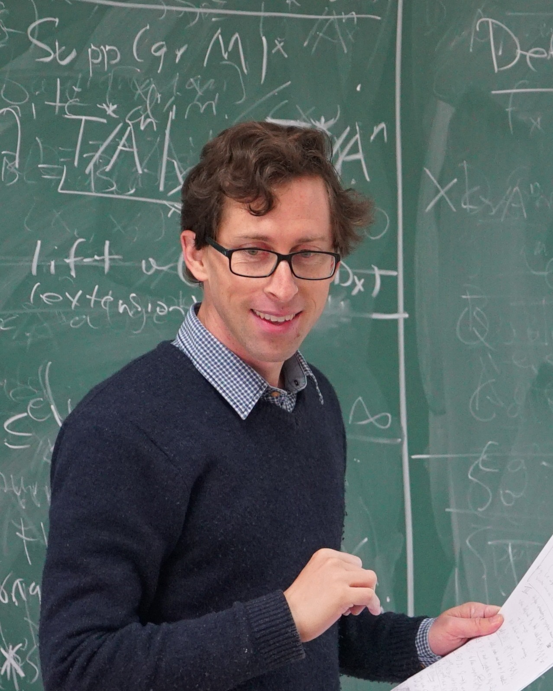

Travis Schedler
I am a Professor of Mathematics at Imperial College London. My research lies at the interface of algebra, geometry, representation theory, and mathematical physics.

I work on algebraic and geometric structures arising in mathematical physics. A central theme is the geometry of symplectic and Poisson singularities and their resolutions, together with their links to representation theory. I have also worked extensively on Poisson (co)homology and on deformations and quantisations of log symplectic structures.
At Imperial, I work in the Pure Mathematics Section, where I am Director of the MSc programme in Pure Mathematics and co-organise the Geometry, Algebra, and Theoretical Physics (GATP) seminar with Amihay Hanany.
Contact
Department of Mathematics
Imperial College London
Huxley Building, Room 622
London SW7 2AZ, UK